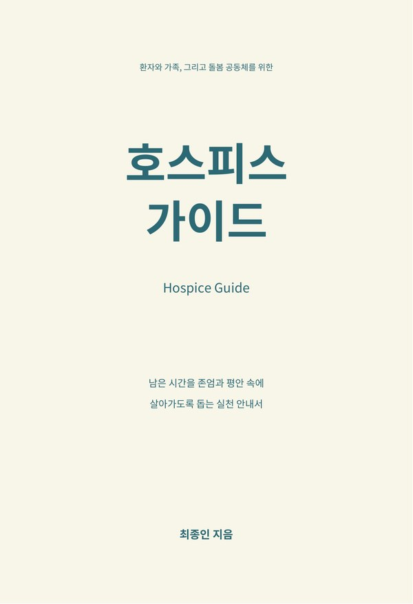

David Before the Gray Rhino
Navigating modern crises with David's wisdom.
Buy NowBooks on theology, ministry, and caring for God's people.
Navigating modern crises with David's wisdom.
Buy Now
A biblical understanding of heaven and eternal hope.
Buy NowA comprehensive guide for churches caring for cancer patients.
Buy Now
Building church communities that welcome and support people with disabilities.
Buy Now
Care that guards the dignity and peace of the days that remain, for patients, families, and care volunteers.
Read MoreNine scenes from Luke's Gospel illumine the end of life biblically and as a whole person.
Read More
Old age as a spiritual journey of maturity rather than decline.
Read More
Worship principles and a twelve-week worship plan for members with dementia and their families.
Read MoreHow a church walks with a member and family standing before a cancer diagnosis.
Read More
From values clarification and advance care planning to bereavement coaching and training trainers.
Read MoreTwelve lessons on purpose and dignity in old age, learned from the life of Daniel.
Read More
Dignity, self-determination, withdrawal of treatment, and death with dignity: standards for elder care.
Read More